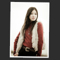
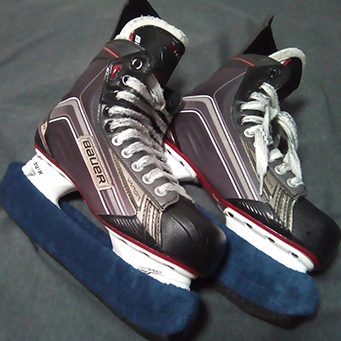

テスト
使用できる言語
HTML、CSS、JavaScript
最近興味のある言語（フレームワークなど）
ES6（Vue+Babel+TS）、PHP(Wordpress)、
Node.js
使用できるアプリケーション
Photoshop、Illustrator、Lightroom、Clip Studio、など
実務で使用したWEBツール､フレームワーク
Git、SASS、Grunt、Webpack、Backbone(underscore)、Zepto（jQuery）、CMS（Movabletype）、など
- 
- 